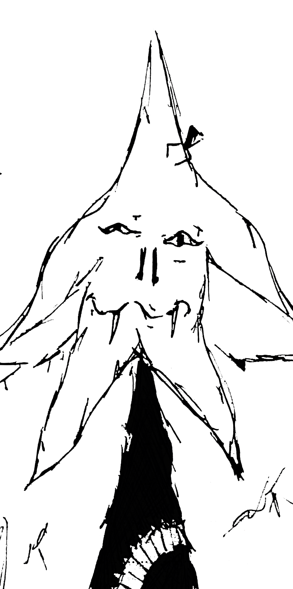
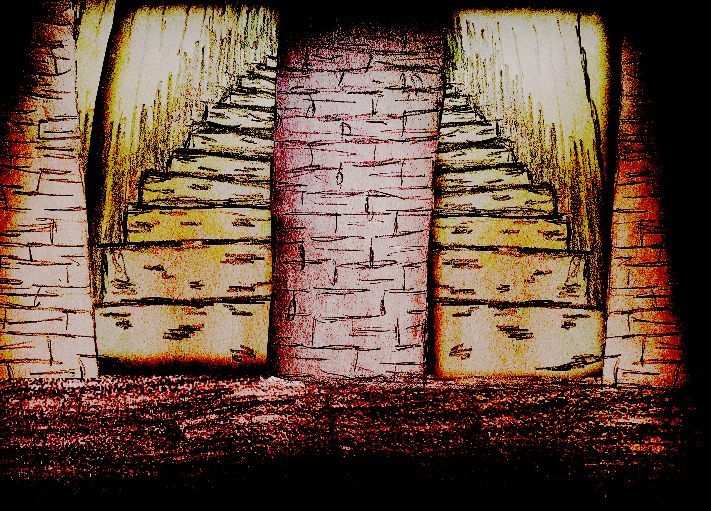
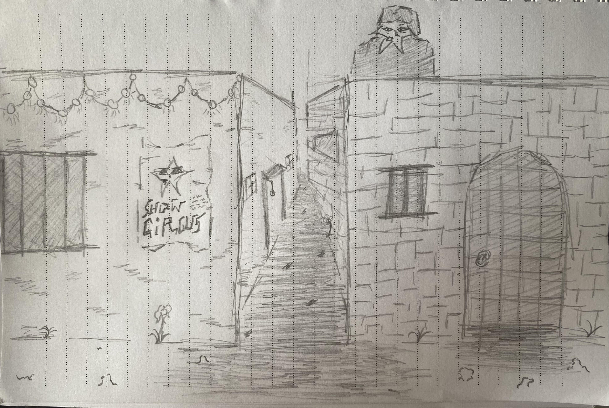
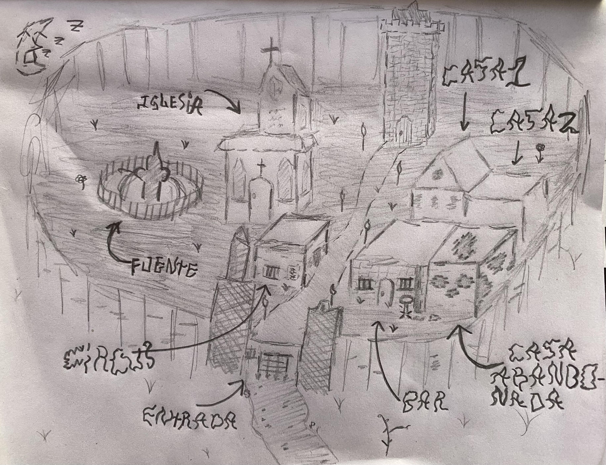

Simbolo vagante pidiendo piedad

Simbolo vagante sufriendo algun que otro disparo 🥺

Bocetos

Circus Show y callejon

Mapa del pueblo...
Les muestro un poco del proceso de desarrollo de los juegos de Soulsarchive.com, mi idea con este juego a futuro es abrirlo mas alla de una simple torre, poder entrar a varios sitios y "explorar" el pueblo de estos seres, un pueblo ubicado en alguna parte del campo de setas.